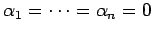

Eine endliche Teilmenge eines Vektorraums  heißt linear unabhängig, wenn aus
heißt linear unabhängig, wenn aus
 |
(12.15) |
folgt. Anderenfalls heißt sie linear abhängig. Hat man  und  beliebige Vektoren aus
beliebige Vektoren aus  , dann ist aufgrund der Vektorraumaxiome trivialerweise das Nullelement von
, dann ist aufgrund der Vektorraumaxiome trivialerweise das Nullelement von  . lineare Unabhängigkeit der Vektoren
. lineare Unabhängigkeit der Vektoren  bedeutet die Darstellung des Nullelements ausschließlich nur mit . Dieser wichtige Begriff der linearen Abhängigkeit ist aus der Linearen Algebra gut bekannt und diente bereits zur Definition eines Fundamentalsystems von Lösungen für homogene Differentialgleichungen. Eine unendliche Teilmenge
bedeutet die Darstellung des Nullelements ausschließlich nur mit . Dieser wichtige Begriff der linearen Abhängigkeit ist aus der Linearen Algebra gut bekannt und diente bereits zur Definition eines Fundamentalsystems von Lösungen für homogene Differentialgleichungen. Eine unendliche Teilmenge  heißt linear unabhängig, wenn jede endliche Teilmenge von E linear unabhängig ist. Anderenfalls heißt E wieder linear abhängig.
heißt linear unabhängig, wenn jede endliche Teilmenge von E linear unabhängig ist. Anderenfalls heißt E wieder linear abhängig.
| Beispiel |
|
Bezeichnet man mit ek die Folge, deren Glieder bis auf das k-te alle gleich 0 sind und das k-te Glied gleich 1 ist, dann liegt ek im Raum und demzufolge in jedem Folgenraum. Die Menge ist linear unabhängig in allen diesen Räumen. Im Raum ist z.B. das Funktionensystem |